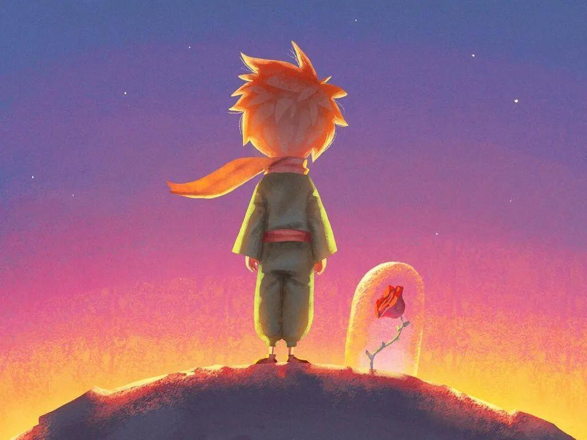
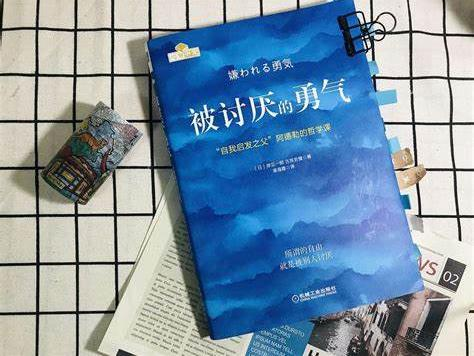
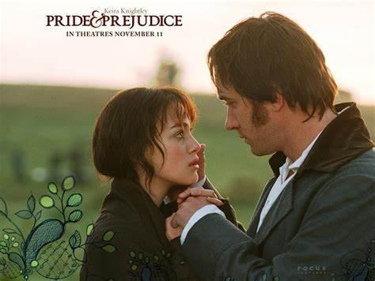
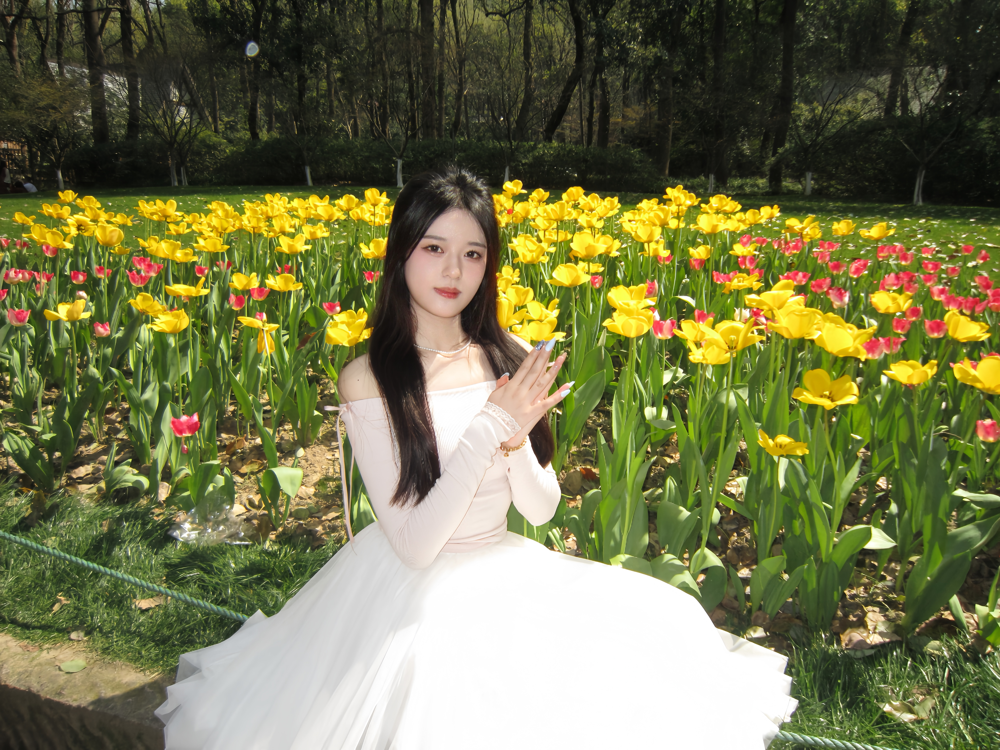
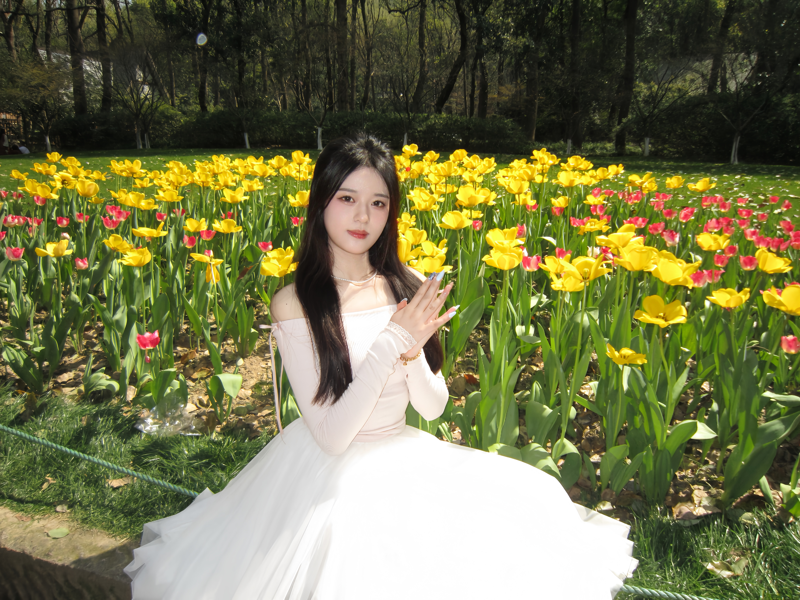

📚 阅读

📘 《小王子》
“大人们总是关心数字，而我在寻找一朵花。
在这本看似童话的书里，我读懂了孤独、爱与失去。
小王子让我明白，有些东西用眼睛是看不到的，只有用心才看得见。
每次重读，我都像在和童年的自己和解。
📙 《平凡的世界》
“活着，就要做一个对社会有用的人。”
孙少安和孙少平的挣扎与成长，是那个年代千千万万普通人的缩影。
这本书教会我：人生没有捷径，唯有在泥泞中前行，才能活出自己的光亮。
哪怕平凡，也能活得不卑不亢。

📗 《被讨厌的勇气》
“真正的自由，是被讨厌也不害怕。”
这本书让我重新审视了“讨好型人格”。
原来，幸福不是来自别人的认可，而是源于自己内心的独立与坦然。
拒绝不属于自己的期待，也是一种成长。

📕 《傲慢与偏见》
“我们总在误会中相识，也在理解中靠近。”
初读只觉得是一段英式爱情，后来才发现，它写尽了人与人之间的误解与傲慢。
而最终的理解与靠近，不是因为完美，而是因为学会了放下偏见。
这种浪漫，是成熟后的真诚。


 
